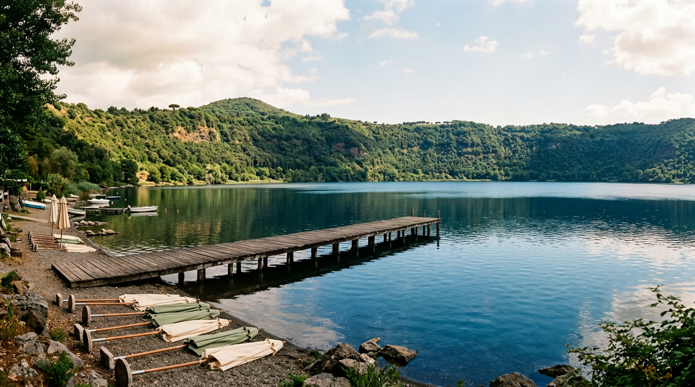

Ferragosto on the lake — beaches, times, prices.

August 15th on Lake Albano is a middle path: neither the packed sea of Anzio, nor the mountains. It is a volcanic crater 150 metres deep, half an hour from Rome, with still water, free beaches and historic lidos. Here is what to expect in terms of opening hours, prices and rules.
The season and the rules
The 2026 bathing season began on 1 May and will end on 30 September. The ordinance was signed by Mayor Alberto De Angelis. Until 31 August the beaches close at 9 pm; from 31 August to 30 September the closing time moves forward to 8 pm ([Il Caffè — 2026 bathing ordinance](https://ilcaffe.tv/articolo/258336/lago-albano-stagione-balneare-2026-no-animali-o-tende-niente-bagno-di-mezzanotte-tutti-i-divieti)).
Swimming is allowed on supervised beaches and in the free areas listed in the Beach Use Plan, but only during daylight and within 100 metres of the shore. Umbrellas, deckchairs, sunbeds or tents cannot be left on free beaches after sunset. Dogs and tents are also forbidden. The same rules apply on Ferragosto, so plan the day around the evening closure.
The free beaches
Free beaches are concentrated on the southern shore, on the Castel Gandolfo side, along Via Spiaggia del Lago and at the end of Via dei Pescatori ([lazioshopping.it](https://lazioshopping.it/blog/itinerari-ed-esperienze/lago-albano-spiagge-balneazione-e-cosa-fare/)). Access is free, but parking in private lots near the trail entrances can cost 3-5 € a day ([latium.ue.is](https://latium.ue.is/it/rilassarsi-e-fare-il-bagno-le-spiagge-nascoste-di-albano/)).
Bring everything: towel, folding umbrella, water and food. The shore is pebbly in most places, sandy in others, with trees providing natural shade. The strip in front of the La Pentima lido is a well-known shaded free access much used by regulars ([mycastelliromani.com](https://www.mycastelliromani.com/blog-detail/post/253692/lake-albano-in-the-summer-what-you-need-to-know)). On days when the lidos are closed, the shore can still be reached by walking along the waterline in front of the concessions ([Municipality of Castel Gandolfo — Lake Albano](https://www.comune.castelgandolfo.rm.it/it/page/lago-albano-itinerario-2)).
The historic lidos
Those who prefer an umbrella, sunbed and bar will find several concessions along Via Spiaggia del Lago: La Capannina Beach (Lot 15 of the PUA, 3,545 m² of beach, concession confirmed to S&M sas until 15 September 2028 after the transfer formalised by the Municipality in 2025), Le Ninfe Beach Club, Vagea Beach Club, Tropicana, Le Lunette, Mad Village by Lagolandia, La Pentima, Le Palme ([Il Caffè — Lot 15 transfer](https://ilcaffe.tv/articolo/245534/lago-di-castel-gandolfo-il-comune-riassegna-un-tratto-di-spiaggia-con-storico-stabilimento-balneare-di-3-500-metri-quadrati)).
Indicative prices for Lake Albano lidos, in line with Lazio lake averages, hover around 10-15 € a day for an umbrella and two sunbeds in high season, with cheaper family offers off-peak ([fabulous.huopenair.com](https://fabulous.huopenair.com/it/esperienze/lago-albano-cosa-fare-e-vedere-nei-castelli-romani), [rome-spirit.com](https://www.rome-spirit.com/it/destinazioni/castel-gandolfo/)). Half-day rates (morning or afternoon) usually start at 12 €. Most lidos offer a bar, restaurant, pedalo and canoe rentals and hot showers.
“The water is clean and calm, with no waves: it is a crater lake.”Rome Spirit — Castel Gandolfo and Lake Albano guide 2026
Practical tips for 15 August
Arrive early. Ferragosto is the peak day of the Italian summer and lakeside parking fills up by 10:30. Castel Gandolfo railway station is about one kilometre away, with a steep pedestrian descent to the lake ([milazzo.life](https://milazzo.life/spiaggia/spiaggia-del-lago-albano-castel-gandolfo-it/)): it is a realistic option for those coming from Rome without a car, but plan for a 15-minute walk and appropriate shoes.
Bring water shoes if your feet are sensitive: the shore is a mix of sand and gravel. Never leave valuables unattended under the umbrella. Remember the 100-metre limit for swimming — there are no waves, but the depth increases rapidly. If it is windy, the centre of the lake can become choppy.
For lunch, the lido restaurants fill up from 1 pm. An alternative: walk back up to the old town of Castel Gandolfo after 2 pm, when the beach loses its central hours to the heat, and eat in piazza della Libertà or in the trattorias of the village. Sunset from the belvedere is one of the finest in the Castelli Romani — a civilised way to close a day on the lake.